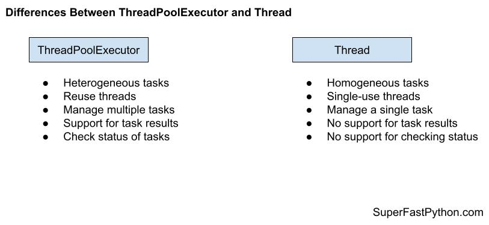

ThreadPoolExecutor vs. Thread in Python
In this tutorial, you will discover the difference between the ThreadPoolExecutor and Thread and when to use each in your Python projects.
Let's get started.
What Is ThreadPoolExecutor
The ThreadPoolExecutor class provides a thread pool in Python.
A thread is a thread of execution. Each thread belongs to a process and can share memory (state and data) with other threads in the same process. In Python, like many modern programming languages, threads are created and managed by the underlying operating system, so-called system-threads or native threads.
You can create a thread pool by instantiating the class and specifying the number of threads via the max_workers argument; for example:
...
# create a thread pool
executor = ThreadPoolExecutor(max_workers=10)
You can then submit tasks to be executed by the thread pool using the map() and the submit() functions.
The map() function matches the built-in map() function and takes a function name and an iterable of items. The target function will then be called for each item in the iterable as a separate task in the process pool. An iterable of results will be returned if the target function returns a value.
The call to map() does not block, but each result yielded in the returned iterator will block until the associated task is completed.
For example:
...
# call a function on each item in a list and process results
for result in executor.map(task, items):
# process result...
You can also issue tasks to the pool via the submit() function that takes the target function name and any arguments and returns a Future object.
The Future object can be used to query the status of the task (e.g. done(), running(), or cancelled()) and can be used to get the result or exception raised by the task once completed. The calls to result() and exception() will block until the task associated with the Future is done.
For example:
...
# submit a task to the pool and get a future immediately
future = executor.submit(task, item)
# get the result once the task is done
result = future.result()
Once you are finished with the thread pool, it can be shut down by calling the shutdown() function in order to release all of the worker threads and their resources.
For example:
...
# shutdown the thread pool
executor.shutdown()
The process of creating and shutting down the thread pool can be simplified by using the context manager that will automatically call the shutdown() function.
For example:
...
# create a thread pool
with ThreadPoolExecutor(max_workers=10) as executor:
# call a function on each item in a list and process results
for result in executor.map(task, items):
# process result...
# ...
# shutdown is called automatically
Now that we are familiar with ThreadPoolExecutor, let's take a look at Thread.
What Is Thread
The Thread class represents a thread of execution in Python.
There are two main ways to use a Thread; they are:
- Execute a target function.
- Extend the class and override run()
Execute a Target Function
The Thread class can execute a target function in another thread.
This can be achieved by creating an instance of the Thread class and specifying the target function to execute via the target keyword.
The thread can then be started by calling the start() function and it will execute the target function in another thread.
For example:
# a target function that does something
def work()
# do something...
# create a thread to execute the work() function
thread = Thread(target=work)
# start the thread
thread.start()
If the target function takes arguments, they can be specified via the args argument that takes a tuple or the kwargs argument that takes a dictionary.
For example:
...
# create a thread to execute the work() function
thread = Thread(target=work, args=(123,))
The target task function is useful for executing one-off ad hoc tasks that probably don't interact with external state other than passed-in arguments and do not return a value
Extend the Class
The Thread class can be extended for tasks that may involve multiple functions and maintain state.
This can be achieved by extending the Thread object and overriding the run() function. The overridden run() function is then executed when the start() function of the thread is called.
For example:
# define a custom thread
class CustomThread(Thread):
# custom run function
def run():
# do something...
# create the custom thread
thread = CustomThread()
# start the thread
thread.start()
Overriding the Thread class offers more flexibility than calling a target function. It allows the object to have multiple functions and to have object member variables for storing state.
Extending the Thread class is suited for longer-lived tasks and perhaps services within an application.
Now that we are familiar with the ThreadPoolExecutor and Thread, let's compare and contrast each.
Comparison of ThreadPoolExecutor vs. Thread
Now that we are familiar with the ThreadPoolExecutor and Thread classes, let's review their similarities and differences.
Similarities Between ThreadPoolExecutor and Thread
The ThreadPoolExecutor and Thread classes are very similar. Let's review some of the most important similarities.
1. Both Use Thread
Both the ThreadPoolExecutor and Thread are based on Python threads.
Python supports real system-level or native threads, as opposed to virtual or green threads. This means that Python threads are created using services provided by the underlying operating system.
The Thread class is a representation of system threads supported by Python. The ThreadPoolExecutor makes use of Python Threads internally and is a high-level of abstraction.
2. Both Can Run Ad Hoc Tasks
Both the ThreadPoolExecutor class and the Thread can be used to execute ad hoc tasks.
The ThreadPoolExecutor can execute ad hoc tasks via the submit() or map() function. Whereas the Thread class can execute ad hoc tasks via the target argument.
3. Both Are Subject to the GIL
Both the ThreadPoolExecutor class and the Thread are subject to the global interpreter lock (GIL).
The GIL is a programming pattern in the reference Python interpreter (e.g. CPython, the version of Python you download from python.org). It is a lock in the sense that it uses synchronization primitives to ensure that only one thread of execution can execute instructions at a time within a Python process.
This means that although we may have multiple threads in a ThreadPoolExecutor or multiple instances of Thread, only instructions from one thread can execute at a time in a Python process.
This constraint, in turn, suggests that both ThreadPoolExecutor and Thread are well suited to IO-bound tasks and not CPU-bound tasks.
Differences Between ThreadPoolExecutor and Thread
The ThreadPoolExecutor and Thread are also quite different. Let's review some of the most important differences.
1. Heterogeneous vs. Homogeneous Tasks
The ThreadPoolExecutor is for heterogeneous tasks, whereas Thread is for homogeneous tasks.
The ThreadPoolExecutor is designed to execute heterogeneous tasks, that is tasks that do not resemble each other. For example, each task submitted to the thread pool may be a different target function.
The Thread class is designed to execute homogeneous tasks. For example, if the Thread class is extended, then it only supports a single task type defined by the custom class.
2. Reuse vs. Single Use
The ThreadPoolExecutor supports reuse, whereas the Thread class is for single use.
The ThreadPoolExecutor class is designed to submit many ad hoc tasks at ad hoc times throughout the life of a program. The threads in the pool remain active and ready to execute work until the pool is shutdown.
The Thread class is designed for a single use. This is the case regardless of using the target argument or extending the class. Once the Thread has executed the task, the object cannot be reused and a new instance must be created.
3. Multiple Tasks vs. Single Task
The ThreadPoolExecutor supports multiple tasks, whereas the Thread class supports a single task.
The ThreadPoolExecutor is designed to submit and execute multiple tasks. For example, the map() function is explicitly designed to perform multiple function calls concurrently.
Additionally, the concurrent.futures module provides functions such as wait() and as_completed() specifically designed for managing multiple concurrent tasks in the thread pool via their associated Future objects.
The Thread class is designed for executing a single task, either via the target argument or by extending the class. There are no built-in tools for managing multiple concurrent tasks; instead, such tools would have to be developed on a case-by-case basis.
Summary of Differences
It may help to summarize the differences between ThreadPoolExecutor and Thread.
ThreadPoolExecutor
- Heterogeneous tasks, not homogeneous tasks.
- Reuse threads, not single use.
- Manage multiple tasks, not single tasks.
- Support for task results, not fire-and-forget.
- Check status of tasks, not opaque.
Thread
- Homogeneous tasks, not heterogeneous tasks.
- Single-use threads, not multi-use threads.
- Manage a single task, not manage multiple tasks.
- No support for task results.
- No support for checking status.
The figure below provides a helpful side-by-side comparison of the key differences between ThreadPoolExecutor and Thread.

How to Choose ThreadPoolExecutor or Thread
When should you use ThreadPoolExecutor and when should you use Thread? Let's review some useful suggestions.
When to Use ThreadPoolExecutor
Use the ThreadPoolExecutor class when you need to execute many short- to modest-length tasks throughout the duration of your application.
Use the ThreadPoolExecutor class when you need to execute tasks that may or may not take arguments and may or may not return a result once the tasks are complete.
Use the ThreadPoolExecutor class when you need to execute different types of ad hoc tasks, such as calling different target task functions.
Use the ThreadPoolExecutor class when the types of tasks of and timing of when you need to execute tasks varies at runtime.
Use the ThreadPoolExecutor class when you need to be able to queue up a large number of tasks.
Use the ThreadPoolExecutor class when you need to be able to check on the status of tasks during their execution.
Use the ThreadPoolExecutor class when you need to take action based on the results of tasks, such as the first task to complete, the first task to raise an exception, or results as they become available.
Don't Use ThreadPoolExecutor When...
Don't use the ThreadPoolExecutor for complex tasks that may be spread across multiple function calls. Instead, you may be better suited to extending the Thread class and encapsulating all the functions for the task.
Don't use the ThreadPoolExecutor for tasks that require the management of a lot of state. Instead, you may be better suited to extending the Thread class and managing state as instance variables.
Don't use the ThreadPoolExecutor for single one-off tasks. Instead, you may be better suited to using the Thread class with the target argument.
Don't use the ThreadPoolExecutor for long-running tasks. You might be better suited to extending the Thread class and defining the long duration task.
When to Use Thread
Use the Thread class when you have a single one-off task to execute via the target argument.
Use the Thread class for many similar tasks with different arguments that do not return a result, such as via the "target" argument or by multiple instances of a customized Thread class.
Use the Thread class when you have a lot of complex behavior spread across multiple functions and/or when you have a lot of state to be managed. In these cases, you can extend the Thread class and define your instance variables and task functions.
Use the Thread class for long-running tasks by extending the Thread class and treat the object as a service within your application.
Don't Use Thread When...
Don't use the Thread class for many different task types, e.g. different target functions. You are better off using the ThreadPoolExecutor.
Don't use the Thread class when you require a result from tasks; you could achieve this by extending the Thread class, although it's easier with the ThreadPoolExecutor.
Don't use the Thread class when you need to execute and manage multiple tasks concurrently. This could be achieved with Thread but would require developing the tools and infrastructure.
Don't use the Thread class when you are required to check on the status of tasks while they are executing; this can be achieved with Future objects returned when submitting tasks to the ThreadPoolExecutor.
Takeaways
You now know the difference between ThreadPoolExecutor and Thread and when to use each.